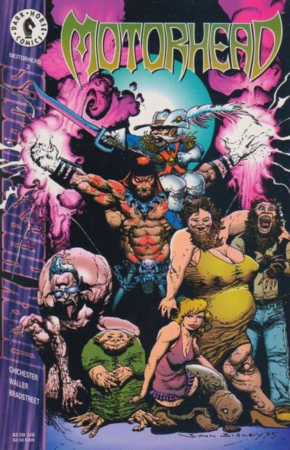
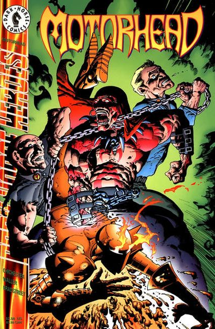
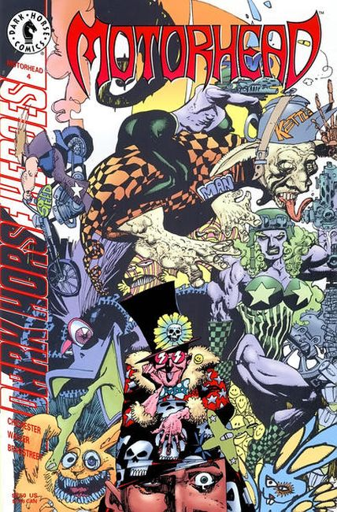
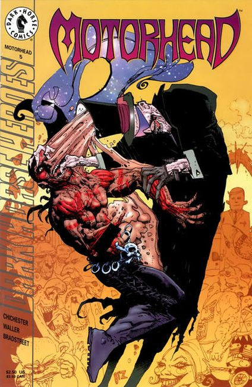
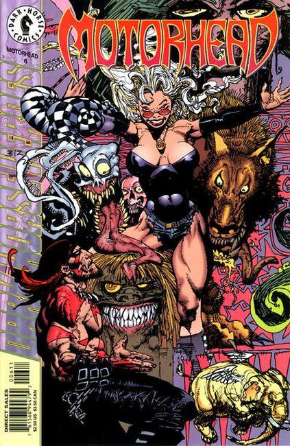

#1 Embrace brutality, relish absurdity, and never try to hide your warts. Motorhead is back in his own ongoing series! Writer D.G. Chichester promises this will be "the most bizarre, exciting and frightening superhero series you've ever read," but only if Motor makes it through the first issue! A Predator has landed in Steel Harbor, and he's looking for big game. This Predator collects heads, and he's never seen one quite like Motorhead!

#2 We are all of us freaks; some simply wear it more proudly than others. Motorhead finds himself square between an armed horde of white supremacists and the side-show members of the Laughing Wolf carnival. And he knows which ones he'd call "freaks."

#3 Hate is the common foe of the good people of the world. Just ask Motorhead and the Laughing Wolf carnival as Jackboot and the posse start to destroy what little world they have left. It's a knock-down, all-around pulse-pounding showdown that Frank Fletcher just may not survive unless he unleashes the incredible power of Motorhead. Using that power means that Frank must listen to the little voice inside his head, the one which makes him doubt his very sanity. Is it worth the price?

#4 Memorial Ridge, Nebraska, has always been a cash cow for the Laughing Wolf carnival...until this year. Something has stolen its audience, something sinister and sick. Welcome to The Catacombs, an amusement park devoted to the thrill of dying and experiencing the afterlife! Will Motorhead have the time of his life or experience the final ride into oblivion? And who is the long, tall stranger with the hole in his head?

#5 At the Laughing Wolf Carnival, no one is laughing anymore. The carnival members are prisoners in their own nightmares, the work of Tumulus Pallbearer. Only Motorhead can bring them back, but to do that means listening to the voices in his own head and turning loose The Motor! Will he be able to maintain control and keep the voracious Pallbearer from eating his brain? "Blood and Consciousness" is guaranteed to leave readers hungry for more!

#6 It's Christmas in the town of Silver Streak, Wyoming, and Motorhead and the Laughing Wolf Carnival find the place anything but festive. Silver Streak suffers under the heel of Blackleg, the cruel-eyed dictator who rules the town with an iron fist! Motorhead wants to give the oppressed townspeople their freedom...but what if they can't accept it?